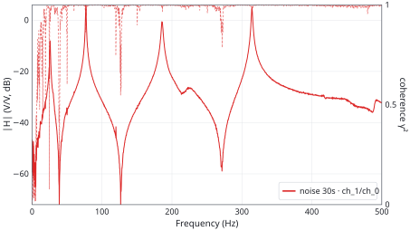
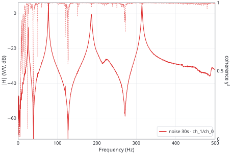
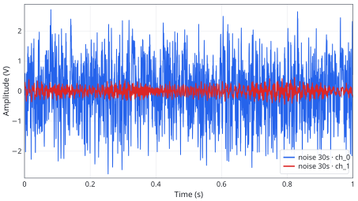
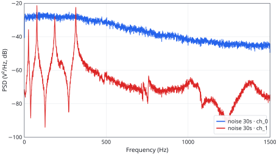
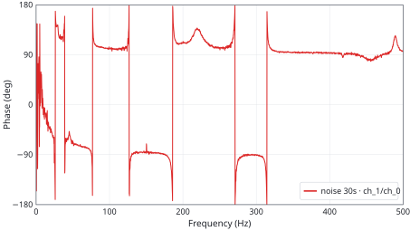
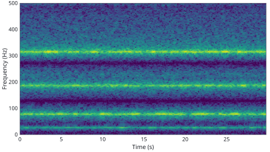
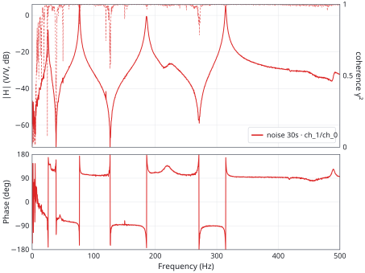
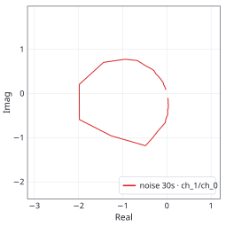

1. The main default: 16:9 (top) against 3:2 (below)
Placeholder body text in 10 pt Times-style type, for scale. Each figure is laid out for the width it is shown at, so its labels print at 10 pt and its numbers and legend at 9 pt.


2. The default on other single-pane plots
Placeholder body text in 10 pt Times-style type, for scale. Each figure is laid out for the width it is shown at, so its labels print at 10 pt and its numbers and legend at 9 pt.


3. The default on other single-pane plots
Placeholder body text in 10 pt Times-style type, for scale. Each figure is laid out for the width it is shown at, so its labels print at 10 pt and its numbers and legend at 9 pt.


4. Exception: Bode
Placeholder body text in 10 pt Times-style type, for scale. Each figure is laid out for the width it is shown at, so its labels print at 10 pt and its numbers and legend at 9 pt.

5. Exception: Nyquist
Placeholder body text in 10 pt Times-style type, for scale. Each figure is laid out for the width it is shown at, so its labels print at 10 pt and its numbers and legend at 9 pt.
